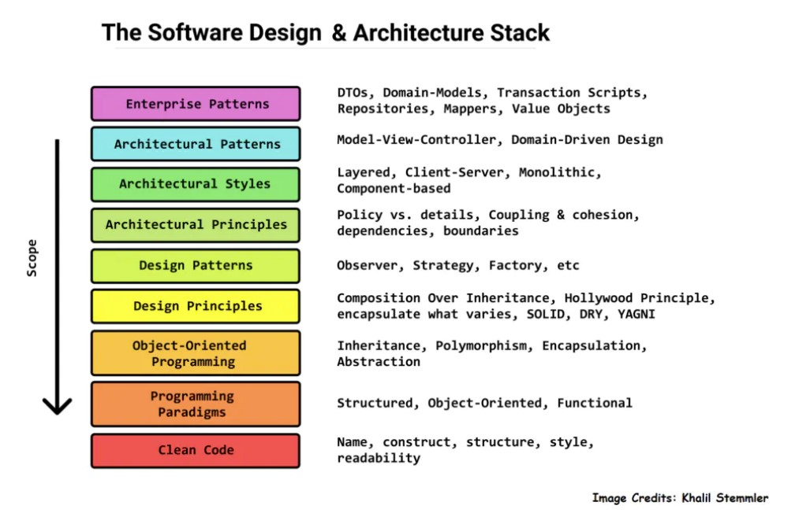
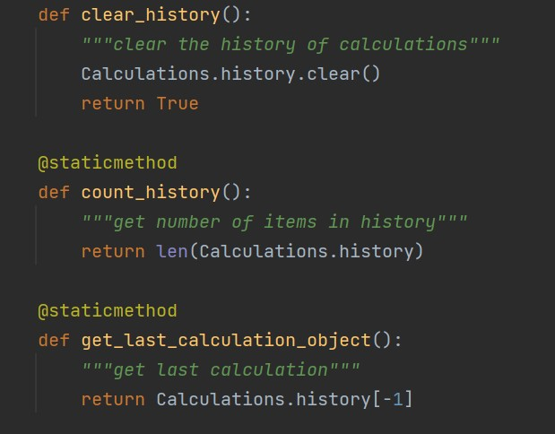
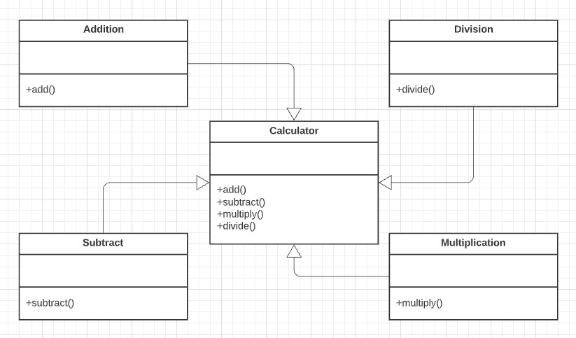
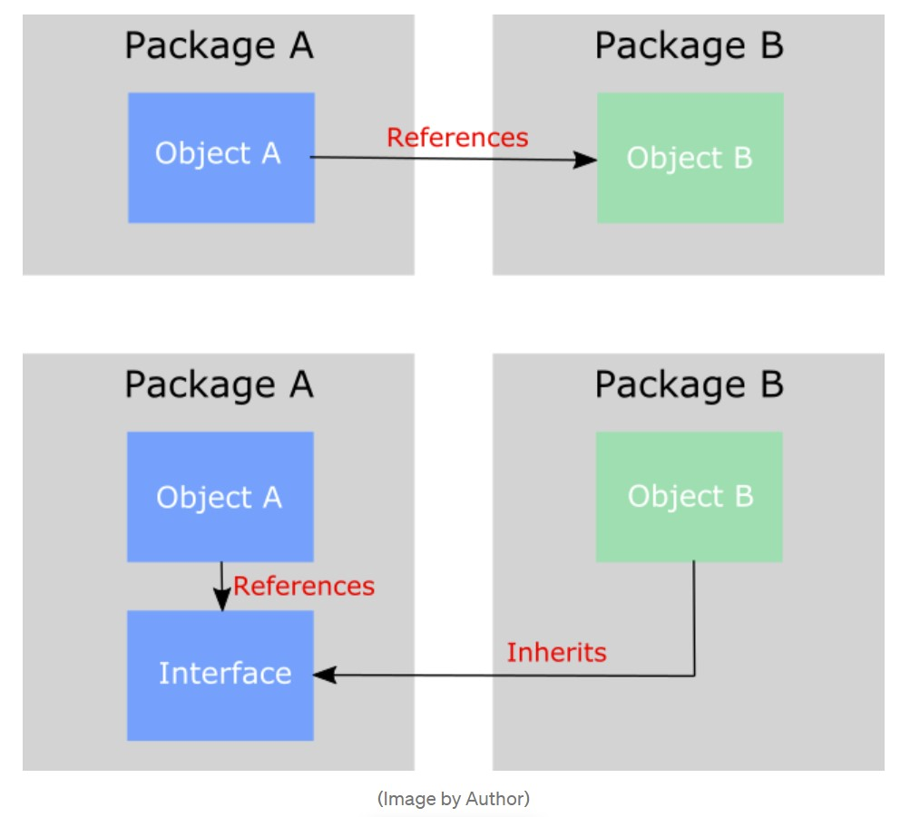

SOLID
What Is Design Patterns?
In software engineering, a software design pattern is a general, reusable
solution to a commonly occurring problem within a given context in software design.
It is not a finished design that can be transformed directly into source or machine code. It is a description or template for how to solve a problem that can be used in many different situations.
Design patterns are formalized best practices that the programmer can use to solve common problems when designing an application or system.

SOLID - Basic Design Principles

- SRP – Single Responsibility Principle
“A class should have one, and only one, reason to change”
-
The Single Responsibility Principle requires that a class should have only one job. So if a class has more than one responsibility, it becomes coupled. A change to one responsibility results to modification of the other responsibility.

- Explain code example: Each function handles the one responsibility. clear_history() is responsible for clear the history of Calculation. count_history() is responsible for counting the history of Calculation. get_last_calculation_object() is responsible for getting the last calculation
- OCP – Open/Closed Principle
“Software entities … should be open for extension but closed for modification”
- Software entities(Classes, modules, functions) should be open for extension, not modification. You cannot change your code when the code premises needs to be modified, but that if you need to add new functions similar to the one present, you should not require to change other parts of the code.


- Explain code example: We have an class called "Calculation" and their own child classes - Addition, Subtraction, Multiplication which are inherited from Calculation. Each child class shared the same function get_result() but returning diffrent results. So, when we have an Addition subclass to calculate the sum of numbers, if we want to add another Calculation for calculating multiplication of numbers, we only need to add a class "Multiplication" inheriting from the class "Calculation". The newly formed sub-class will not modify in any other part of the code needs to happen.
- LSP – Liskov Substitution Principle
“Functions that use pointers or references to base classes must be able to use objects of derived classes without knowing it”
-
Let q(x) be a property provable about objects of x of type T. Then q(y) should be provable for objects y of type S where S is a subtype of T.
-
The main idea behind Liskov Subtitution Principle is that, for any class, a client should be able to use any of its subtypes indistinguishably, without even noticing, and therefore without compromising the expected behavior at runtime. This means that clients are completely isolated and unaware of changes in the class hierarchy.
- ISP – Interface Segregation Principle
“Many client-specific interfaces are better than one general-purpose interface”
- Make fine grained interfaces that are client specific Clients should not be forced to depend upon interfaces that they do not use. This principle deals with the disadvantages of implementing big interfaces.

- For example: The Calculation abstract class that has 4 abstarct methods, add() subtract() multiply() divide(). Addition class that inherited from the Vehicle class and implement add() methods, similarly with others. To sum up, Calculation inferface into 4 smaller interfaces Addition, Subtraction, Multiplication, Division class
- DIP – Dependency Inversion Principle
“Abstractions should not depend on details. Details should depend on abstraction. High-level modules should not depend on low-level modules. Both should depend on abstractions”
- Dependency should be on abstractions not concretions. High-level modules should not depend upon low-level modules. Both low and high level classes should depend on the same abstractions. Abstractions should not depend on details. Details should depend upon abstractions.

Resource
{% endblock %}